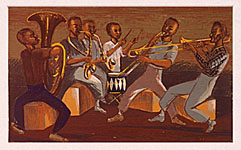
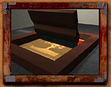
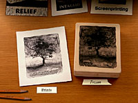
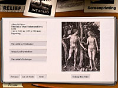
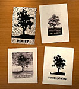
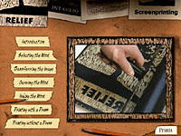

Prints and Processes

A New Interactive Program Presents Great Works on Paper and Sheds Light
on Technique
Over the past fifteen years, Prints and Drawings curator Richard Campbell,
with the help of his able staff, has mounted more than fifty exhibitions
featuring works on paper variously convened from the museum's rich collection.
He has also placed scores of these works among paintings, sculptures and
decorative arts pieces in other permanent collection galleries and in
period rooms.
The public display of any given print at the Institute is necessarily
fleeting. Due to light sensitivity and the sheer enormity of the collection
itself (at least 45,000), these delicate objects are frequently rotated,
resulting in brief, brilliant appearances.
In the interest of creating wider access, the Herschel V. Jones Print
Study Room affords scholars, students and the general public an opportunity
to schedule appointments to view works, which can be pulled from their
climate-controlled storage upon request.
Starting this fall, visitors have yet another point of entry into this
remarkable collection -through a select group of forty-eight prints, personally
chosen and interpreted by the curator- in the form of a touch-screen computer
program installed amid the museum's galleries.
More at home with 17th-century masters than late 20th-century technology,
Campbell allowed the Institute's Interactive Media Group (IMG) the freedom
to explore new ways of presenting these works in Prints & Processes,
the seventh permanent-collection-based multimedia program to be produced
by the Institute.
Campbell selected works that, taken together, introduce the story of print
development in the western world, dating back to the 15th century. Curatorial
Assistant Lisa Michaux and writer Julie L'Enfant elucidated Campbell's
concepts, shaping them for the interactive medium and the broad museum
audience.
As the title implies, a balance was sought between the presentation
of great works from the collection and technical information shedding
light on fine art printmaking processes. Woodcuts, etchings, engravings,
lithographs and screenprints are exquisitely represented -in works by
Durer, Rembrandt, Kollwitz, Munch and Warhol, to name just a few- as the
processes behind print creation are demonstrated by living artists.
Encouraging both looking and learning, the program allows swift movement
between two primary print environments: the pristine space where works
on paper are displayed and studied, and the gritty studio in which they
are produced.
The forty-eight selected works appear as stacks of matted
prints organized by medium and can be paged through chronologically or
selected from a list. Narrated comments illuminate these prints, imparting
historical, aesthetic and technical information. Visual highlighting directs
the viewer's eye, reinforcing the commentary. Visitors can also choose
to enlarge each print beyond the perimeter of the computer screen to examine
details and study technique.
To constitute the process half of the program, a simple, graphic image
of a tree was given to five printmakers with the instruction that they
each put this image through the paces of a specific print medium and that
they allow the steps of their creative process to be videotaped.
The results include a group of print illustrations that show,
at once, a consistency of image and the essential differences between
the processes' respective natures. These illustrations became effective
icons, leading the program's users through it's clean, straightforward
interface, realized by graphic designer Julie Loney. 
The video footage was edited into discreet, step-by-step segments by IMG
staffer Brian Thompson, who also handled programming. Recorded in their
printmaking studios, artist David Rathman demonstrates relief, Michael
Kareken and Fred Hagstrom employ engraving techniques, Philip Barber produces
a lithograph, and Ruthann Godollei a screenprint.
As part of a museum-going experience, Prints & Processes offers concepts
and information that can be applied to the museum's ever-changing display
of works on paper. The program is also soon to be published on CD-ROM,
allowing access anytime to students, educators, collectors and anyone
with an interest in the fine art of printmaking.
Location: Prints and
Drawings, 3rd floor